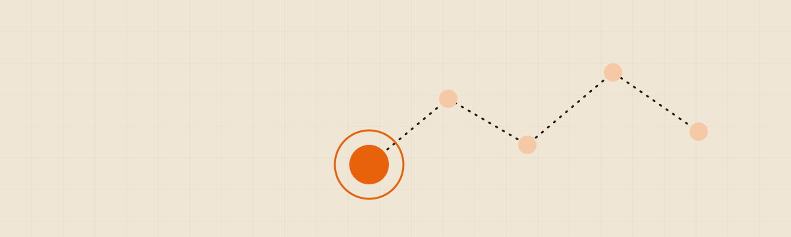
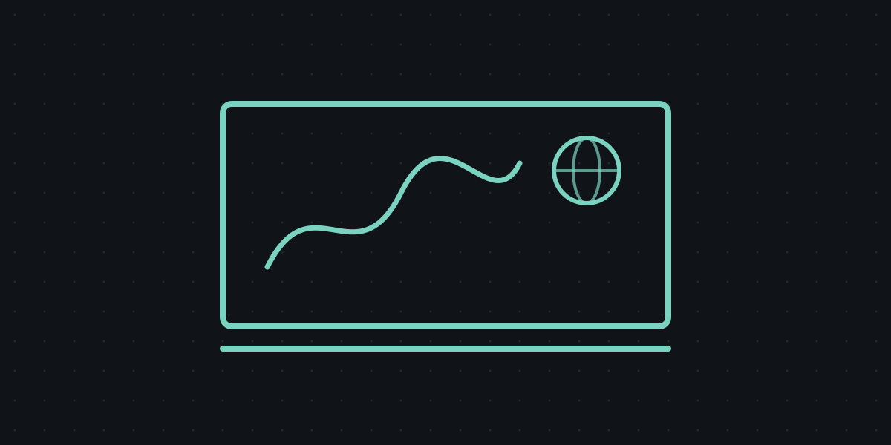

About
I'm drawn to questions where business, psychology and money meet. Why does a free offer attract the wrong customers? Does a viral investing thesis survive real data? Is a startup idea in India's cold chain actually a business?
My process is the same each time. I start from a small spark, like a reel, an article or an idea, then trace every claim back to papers, filings and datasets. I write up what holds and what doesn't, and build a model or tool that lets anyone test the idea themselves.
- Research & fact-checkingPrimary sources, peer-reviewed papers, replication status
- Python modelingFunnel models, simulations, backtests
- Data analysisIMF, market and ETF data, statistics
- AI agents & automationClaude Code skills that research and publish end to end
- WritingClear explainers for non-specialist readers
Experience
CAPA
Internship

AIESEC
Teaching exchange
Research
Case studies that start from a popular claim and end with evidence and a working model.
Tools
Software I built to make research and writing faster, all open source.
Get in touch
The best way to reach me is a message on LinkedIn.